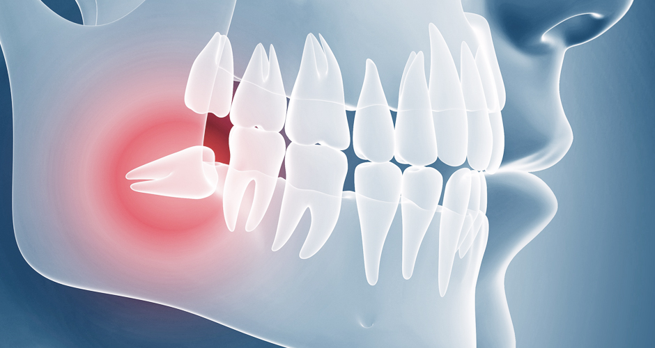
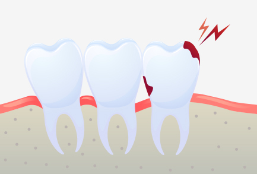
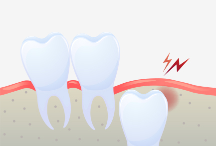
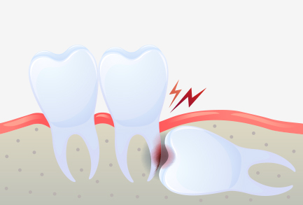
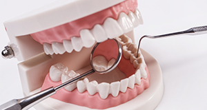
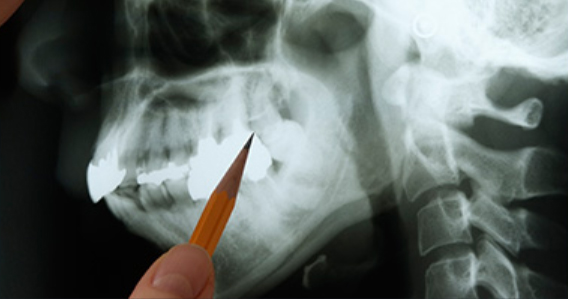
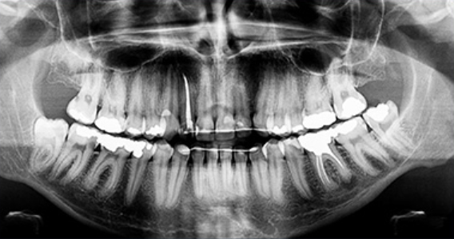
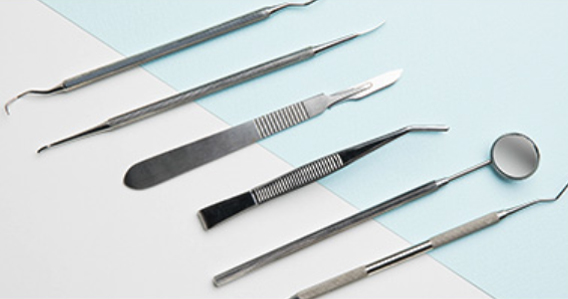

사랑니 충치
가장 안쪽에 있는 사랑니는
칫솔이 잘 닿지 않아 관리가 안되어서
충치나 잇몸 질환이 생기기 쉽습니다.
사랑니의 위치와 상태를 정확히 파악해 안전하게 발치합니다
<%=m_client_en%>
정확하고 안전하게
사랑니는 어금니 뒤쪽에서 나오는데
사랑을 느낄 만한 나이인 10~21세쯤 에 난다고 해서 사랑니라고 부르며
다른 명칭으로는 세번째 나는 큰 어금이라고 제 3대구치라고 불립니다.


가장 안쪽에 있는 사랑니는
칫솔이 잘 닿지 않아 관리가 안되어서
충치나 잇몸 질환이 생기기 쉽습니다.

비정상적인 위치에 매복되어 자란 사랑니는
염증과 통증을 일으킬 수도 있으므로
발치하는 것이 좋습니다.

누워서 자란 사랑니의 경우
바로 앞의 어금니 뿌리를 압박해 염증을 일으키거나
턱뼈의 신경까지 손상시킬 수 있습니다.
사랑니와 어금니 사이에 음식물이 끼게 되어 충치 및 치주염 발생의 위험율이 높아집니다.
임신을 앞둔 여성의 경우 사랑니에 염증이 생기면 치료가 곤란하여 매우 심한 고통을 받을 수 있습니다.
잇몸에 염증이 생겨 임파선이 붓고, 심한 경우 입이 잘 벌어지지 않을 수 있습니다.

앞 치아의 뿌리 부분을 밀어 뿌리가 흡수되는 경우가 생길 수 있습니다.

매복된 사랑니는 3D 첨단 CT촬영으로 상태를 정밀검사하고 발치계획을 세웁니다.
다양한 상태의 사랑니들을 다루어본 경험이 풍부하기 때문에 잇몸 속에
매복되어 보이지 않는 사랑니 발치가 가능합니다.

사랑니 발치 시에는 뿌리가 신경관과 근접해 있는지 또 어느쪽으로 휘어져 있는지를
파악해야 훨씬 더 안전하고 편하게
또 빠르게 뽑을 수 있습니다.
최첨단 3차원 CT를 이용하여 사랑니 뿌리의 위치와
신경관 위치 등을 정밀하게 분석한 후 시행하고 있습니다.

스케일링으로 구강을 청결히 한 후 발치합니다.
경우에 따라 잇몸을 살짝 절개하는 시술을 통해 사랑니를 여러 조각으로 나뉘어
뽑기도 합니다.
이 경우는 1주일 후 실밥을 제거하면 됩니다.